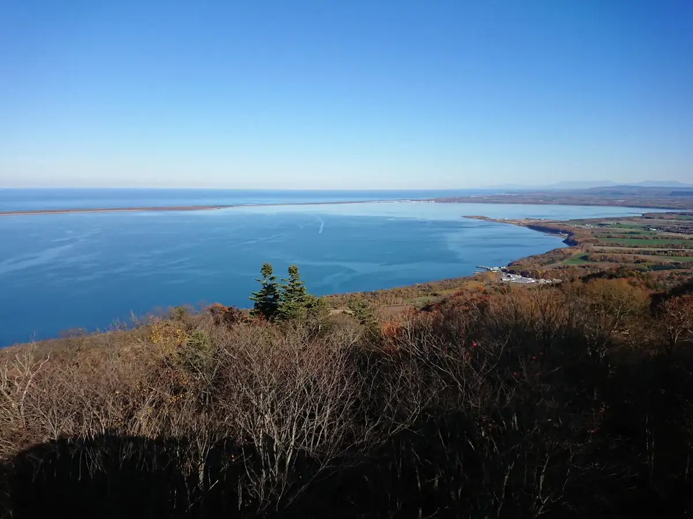
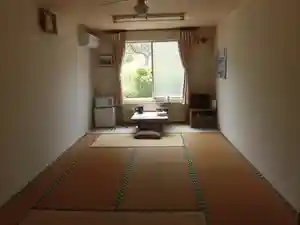
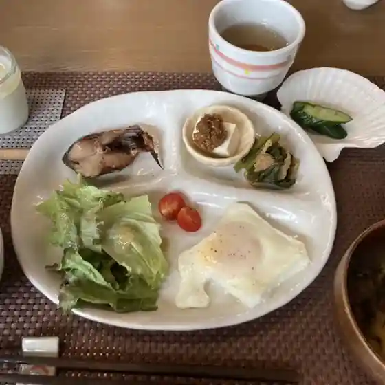
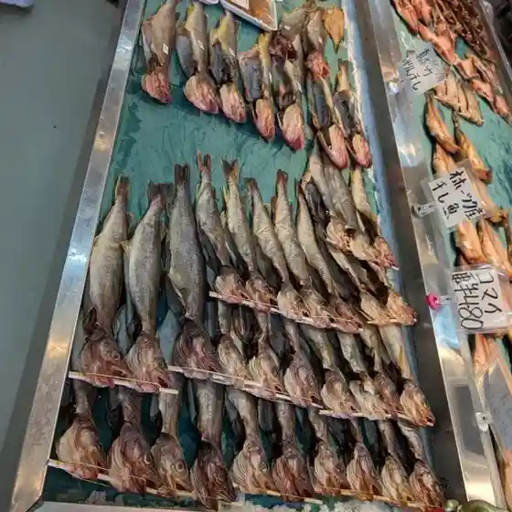
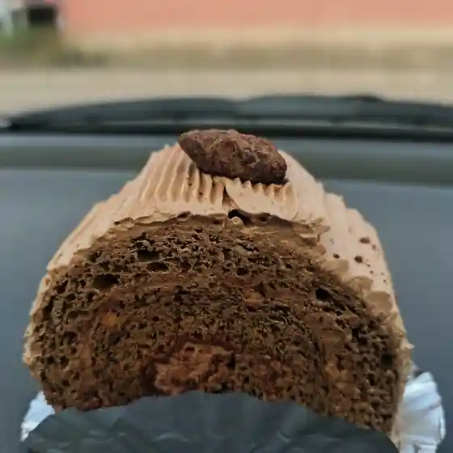
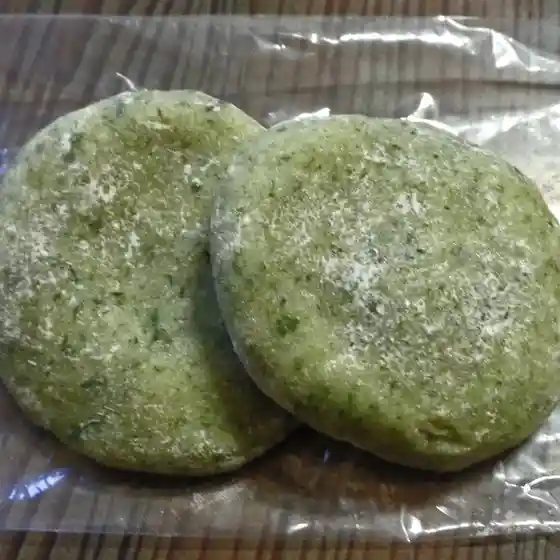
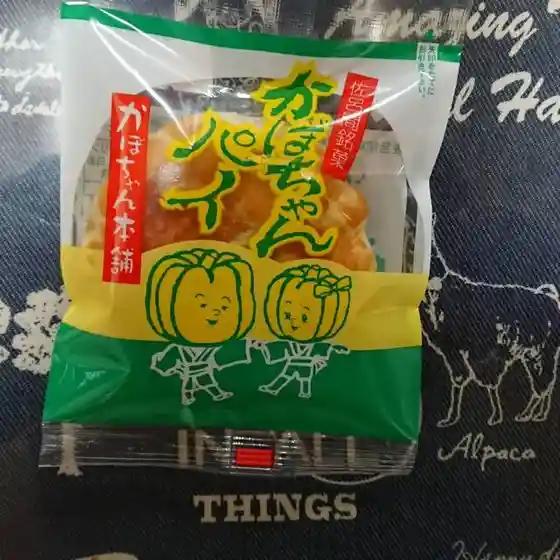
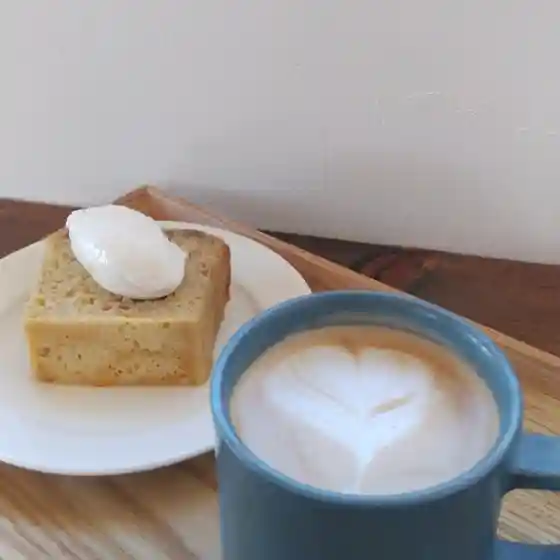

Saroma
Saroma · Hokkaido
Saroma
Highlighted on the Hokkaido map.

Stay
民宿ふく天

Minshuku Fuku Ten
Dining
さろまにあん

Saromanian
久光寿し

Hisamitsu Hisashi Shi
酒処はまゆう

Sake Tokoro Hamayuu
斉藤商店

Saitou Shouten
弘内菓子舗

Hiroshi Nai Kashi Ho
部田菓子舗

Bu Ta Kashi Ho
サンショップ よしの

Sanshoppu Yoshino
hymycoffee

Hymycoffee
道の駅 サロマ湖
Michi No Eki Saroma Mizuumi
カネテツ谷川水産
Kanetetsu Tanigawa Suisan
大城旅館
Ooshiro Ryokan
もりた旅館
Morita Ryokan
レストハウス 華湖
Resutohausu Hana Mizuumi
白帆
Shiraho
カフェ プラタナス鈴鹿
Kafe Puratanasu Suzuka
二代目居酒屋
Nidaime Izakaya
大月菓子司
Ootsuki Kashi Tsukasa
ゆうき
Yuuki
悠林館
Yuu Hayashi Kan
そば処 ほん多屋
Soba Tokoro Hon Taya
鮨の八洲
Sushi No Hasshuu
北勝水産
Kita Kachi Suisan
サロン おひさま
Saron Ohisama
セブンイレブン 佐呂間宮前店
Sefu N'Irefu N Saroma Miyamae Mise